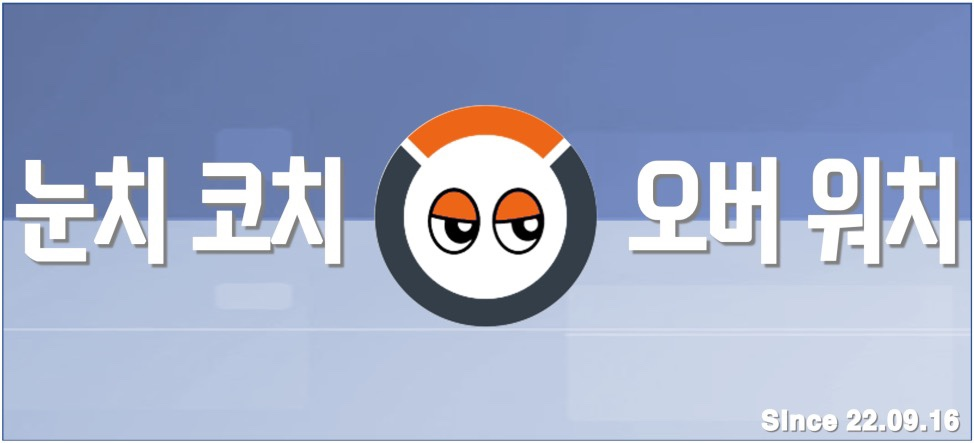

매주 모임의 내부 컨텐츠를 진행하여 모임원들의 교류를 활성화하고 있습니다.
매주 수요일 22시~24시 사이에 내부 컨텐츠를 진행합니다.
컨텐츠는 진행자에 따라 바뀔 수 있습니다.
지금까지의 활동을 보면, '내전'이 가장 많은 비율을 차지하고 있습니다.
이외에도 '힐러매치' 등 다양한 이벤트를 진행하고 있습니다.
틀에 맞는 계획서를 작성하여 매달 최소 2개 이상의 벙을 열고 있습니다.
규칙만 준수한다면 누구든지 자유롭게 벙의 주인(이하, 벙주)이 되어 오프라인 만남을 추진할 수 있습니다.